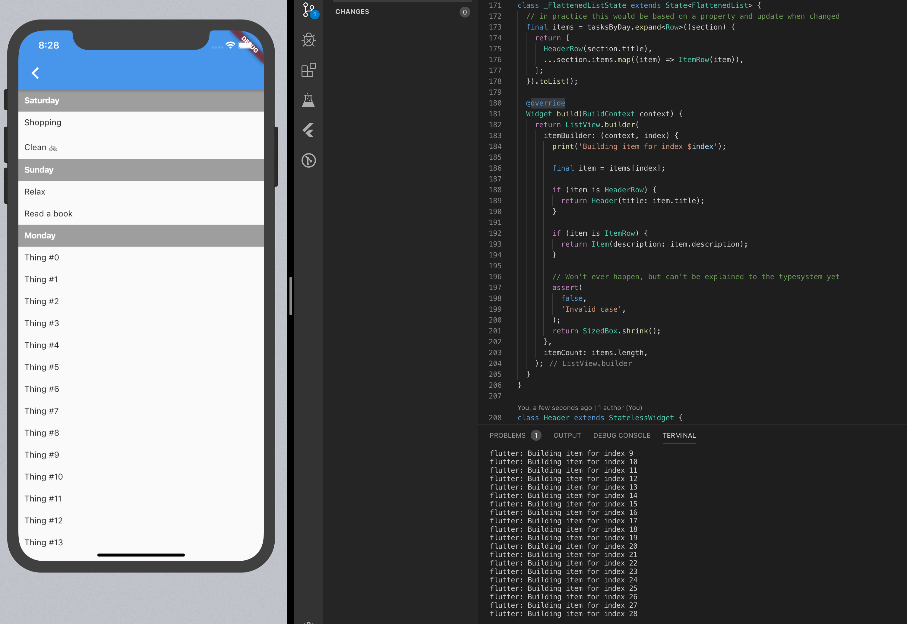

Nested ListViews in Flutter
If you’ve ever tried rendering a simple ListView inside the itemBuilder method of another ListView you’ll most certainly have encountered the Vertical viewport was given unbounded height. exception.
The simple fix (which ranks up top on Google) is to add the shrinkWrap: true property to the inner ListViews. Once that is changed the initial screen renders fine, until you try to scroll the overall list, which is not possible because any drag actions on top of the inner ListViews just scrolls them (even though they might be “fully” rendered). The fix for that issue is then to add physics: ClampingScrollPhysics() to the innner ListViews.
With those 2 lines added to the inner ListView the initial issue is solved and one might consider it done. I would like to disagree and suggest some alternatives. In this I’ll article explain why there is no need to nest ListViews in the first place, how nesting them can be misleading about their performance characteristics (which are bad in practice), and how SliverList is a better approach should you ever have the need to render multiple list below one another.
Performance characteristics of nested ListViews
All of the nested ListView code I have seen in the wild recently used the seemingly performant ListView.builder constructor for the outer and inner ListViews. So it seems like developers are aware that it exists and should be used, and the documentation clearly states the advantages of it:
This constructor is appropriate for list views with a large (or infinite) number of children because the builder is called only for those children that are actually visible.
Unfortunately though, that is not true anymore for the inner ListViews. Because the outer view needs to know how tall the inner ListViews are, the inner ones will get rendered in full until the height is filled. But at the very least the first list view will get rendered in full, which is already bad should that contain many items. This behavior can easily be verified by putting a print in the itemBuilder of the inner ListView:

As you can see in the example above, the 1000 items for the first inner ListView were build, even though only 50 are visible on the screen.
Whether or not this is an issue in your application depends on the maximum amount of items in the inner ListViews. Just from reading the code one might think though that it behaves efficiently – meaning it really only renders visible items – which it does not. Hence I would find it more honest to use a Column and plainly map the items to widgets. Also in the general case that reads nicer than retrieving the item by index from the underlying storage as has to be done with the itemBuilder:
// [... wrapping ListView.builder omitted]
return Column(
children: <Widget>[
...List.generate(
1000,
(innerIndex) {
return Text('Outer = $outerIndex, Inner = $innerIndex');
},
),
],
);
The flattened list approach
So far we’ve only seen how a nested ListView is as much work to render as a Column or a similar widget. One approach I would like to suggest, for most cases, is to unnest the rendering and make do with a single list view. This can be achieved in a variety of ways, but the simple approach of flattening the data structure into a single array should work up to a huge number of items. Just make sure not to compute that flattened array in the builder method, but rather once initially and on updates and keep it stored in some state.
Suppose we’d wanted to build a todo app. Let’s assume our API returns us a list of sorted groups (for example by day) in some kind of Section type:
class Section {
Section(this.title, this.items);
final String title;
final List<String> items;
}
Now instead of rendering the outer ListView with the Sections as items and then an inner ListView for each section, we can flatten the Sections into a list of Rows (a new type we define for this case).
abstract class Row {} // approximation of a union type in Dart
class HeaderRow implements Row {
HeaderRow(this.title);
final String title;
}
class ItemRow implements Row {
ItemRow(this.description);
final String description;
}
// tasksByDay is a List<Section>
final items = tasksByDay.expand<Row>((section) {
return [
HeaderRow(section.title),
...section.items.map((item) => ItemRow(item)),
];
}).toList();
And then that items list can be rendered with a single ListView which renders a specific widget dependening on each item’s type:
ListView.builder(
itemBuilder: (context, index) {
final item = items[index];
if (item is HeaderRow) {
return Text(item.title,
style: TextStyle(fontWeight: FontWeight.bold));
}
if (item is ItemRow) {
return Text(item.description);
}
},
itemCount: items.length,
);
With this approach a little upfront work is required, but then only the rows visbile on screen (+ some small amount of extra rows rendered by the framework) are built:

SliverLists inside a CustomScrollView
The above approach of flattening the list is in my opinion a good approach to render such a grouped list view, but it’s only suitable for lists that have few row types. Should you ever have the need to render lists from different domains in a single list, then a CustomScrollView with SliverLists for each specific type of list seem like a better approach in my opinion. I’ll write up an explanation and code example on those in a follow up post.
Recap
I hope I was able to show how nesting ListViews inside one another might not be a good idea for the problem at hand, and what other implementations are available. You can either use a Column or any other “simple” widget for the inner lists, or flatten the whole list for rendering and by through that achieve the ListView.builder's promise of only rendering items which are visible on screen.